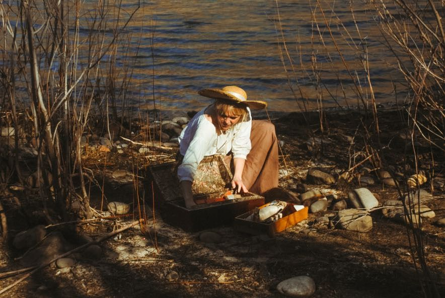
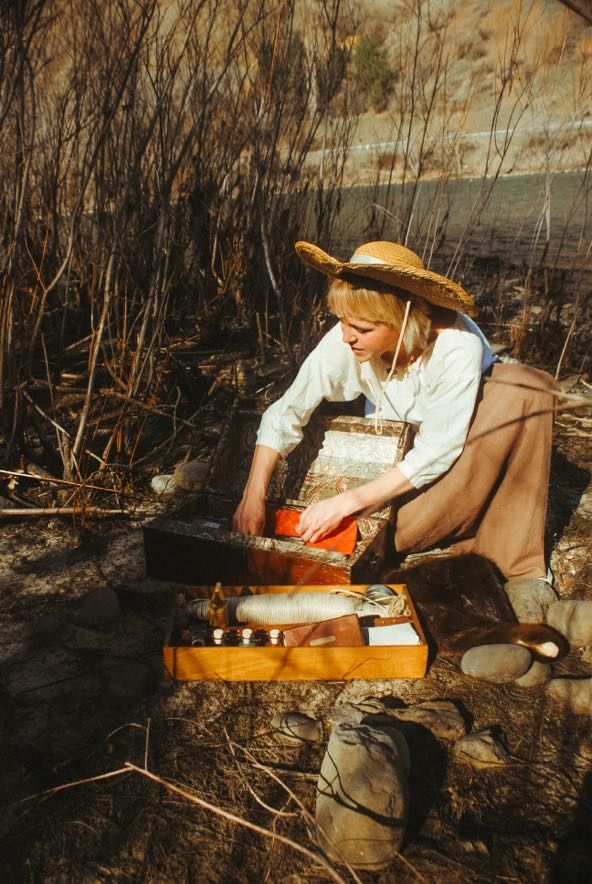
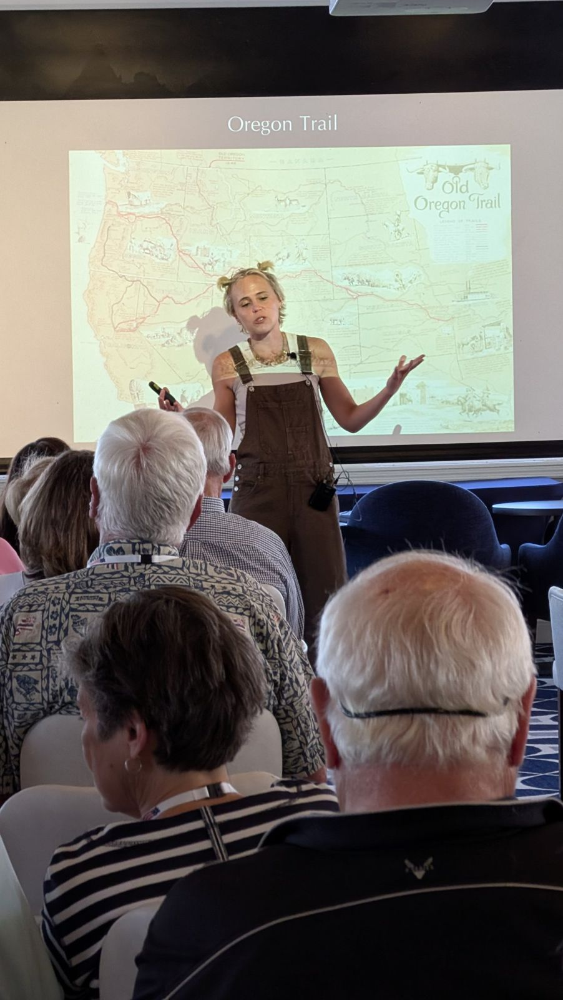
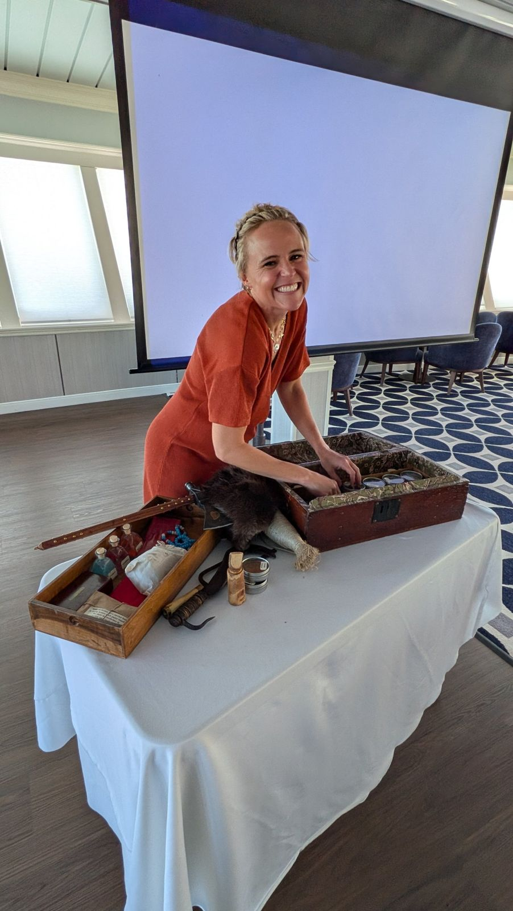
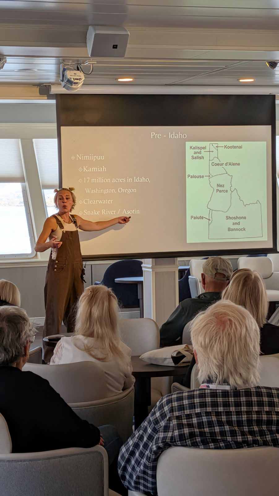
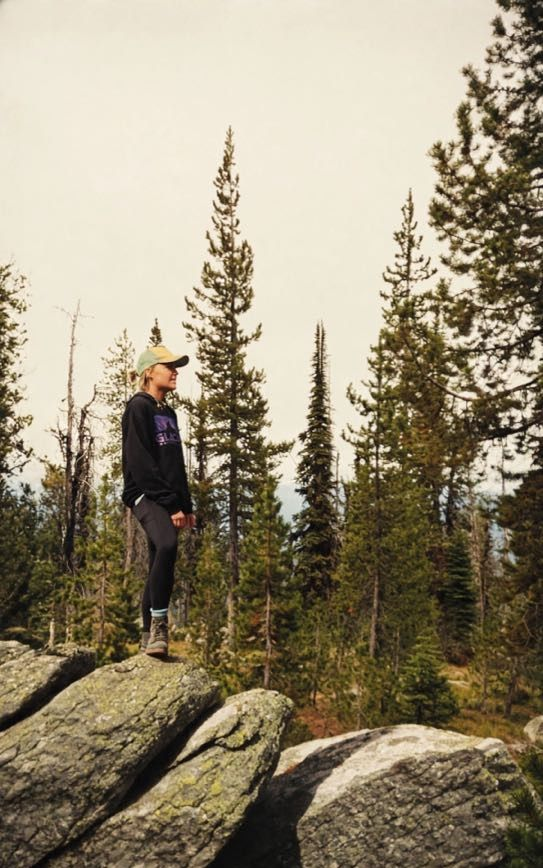

History where the rivers meet
Historian and educator Laurie Rudd shares the long story of the Pacific Northwest on the trail, on the river, and in the classroom, from the tribal nations who have lived here since time immemorial to the explorers, traders, and emigrants who came after.

Where Laurie teaches
History lands differently when you're standing where it happened. For nearly a decade, Laurie has taught wherever the story is, for learners from 9 to 99.

In the field
Her favorite classroom has no walls. Laurie brings the history to life on trail and river trips with outfitters like Lewis and Clark Trail Adventures, from the Lolo Trail in the Bitterroots to the White Cliffs of the Missouri River.
Field programs
On the river
Featured historian aboard American Cruise Lines voyages on the Columbia and Snake Rivers, now heading into her third season.
River cruise programs
In the classroom
Guest presentations, multi-day units, and teacher workshops for schools across the region.
Classroom programs
The medicine chest
Every expedition carried one. Laurie brings hers.
Her chest is filled with the medicines, medical instruments, and treatments of the era: a mix of genuine period pieces she has collected and faithful reproductions, down to a bottle of Rush's Bilious Pills like the ones the Corps of Discovery carried west.
Audiences get to see and handle the history up close, and it tends to be the part of the program everyone remembers. Most of Laurie's programs can include the chest.
Bring the chest to your groupThe whole story
The history of the Northwest didn't begin with Lewis and Clark. It begins with the tribal nations whose homelands these have always been. In every program, Laurie teaches their side of the story with care and respect, alongside the explorers, traders, and settlers who came later.
What people say
[One or two sentence quote]
[One or two sentence quote]
[One or two sentence quote]
Bring these stories to your audience
Any topic in Northwest history, any length, for any group.
Book a presentation
For schools, museums, libraries, cruise lines, outfitters, and tour groups, from a focused one-hour talk to a multi-day series of programs.
Request a dateTravel with Laurie
Join her in the field on Lewis and Clark Trail Adventures trips along the Lolo Trail and the Missouri River.
See LCTA tripsFollow along
Stories from the trail, new programs, and where she's teaching next.
Join the email listLaurie in action
On the trail, on the riverbank, and aboard the ship, history comes with something to hold.




Where to find Laurie next season
-
Spring to fall
Aboard American Cruise LinesColumbia and Snake River voyages
-
Summer
On the trail and the river with Lewis and Clark Trail AdventuresThe Lolo Trail in the Bitterroots and the White Cliffs of the Missouri
-
School year
In classrooms across the regionSchools, libraries, and museums throughout the Pacific Northwest
Want Laurie with your group? Send a booking request.
Stories from the trail, in your inbox
New programs, lesson releases, and where Laurie is teaching next. A few emails a season.